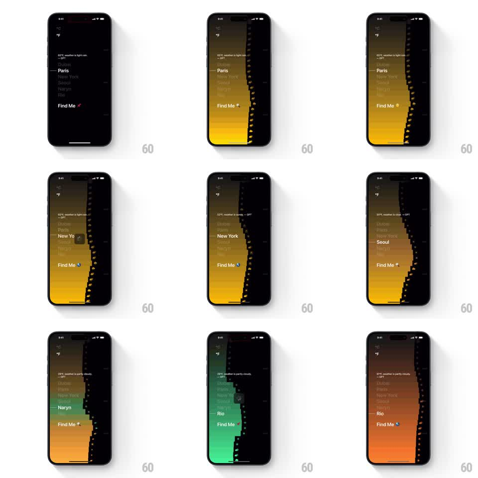

Media
Frame-by-frame

Rebuild this interaction 1:1: Lume's city selector - picking a city from the list wipes a new gradient across the background in a pixel-staircase pattern keyed to that city's climate, while the header weather line and Find Me button update.

Rebuild this interaction 1:1: Lume's city selector - picking a city from the list wipes a new gradient across the background in a pixel-staircase pattern keyed to that city's climate, while the header weather line and Find Me button update.
## Integration
Integration: stack-agnostic spec - springs given as stiffness/damping, timed motions as duration + curve; map every value to your framework and animation library of choice.
## Scene
City list screen: header ("65°F, weather is light rain. - GPT"), a vertical list (Dubai, Paris, New York, Seoul, Naryn, Rio) with a tick on the selected row, a dotted vertical route line down the right edge, and a "Find Me" button at the bottom. The background is a bold vertical gradient - amber-orange for Paris, near-black for New York, yellow for Seoul, green for Naryn, orange-red for Rio.
## Motion spec
Pattern: pixel-staircase gradient wipe per city.
- Tap a city: the row's tick slides to it (spring ~340/20) and the header line crossfades to the new city's weather (250ms).
- The new gradient wipes in from the right edge as a pixel staircase: 8-12 stepped columns, each column filling top-to-bottom in sequence (40ms per column, ease-out) - a chunky dithered reveal, not a smooth crossfade.
- Mid-list cities push the list: rows between old and new selection highlight briefly (background flash, 150ms) as the tick travels.
- The dotted route line redraws its dashes along the right edge (dash offset animates over 400ms) as the wipe passes.
- "Find Me" keeps position but its accent dot takes the new gradient's primary hue (200ms).
## Calibration
- Each city owns a signature gradient (two stops); the wipe direction is always right-to-left.
- Keep text legible: list rows sit on their own scrim when the gradient is bright.
## Reduced motion
Gradient crossfades (400ms); no staircase.
## Don't miss
- The staircase is the signature - columns must be visibly discrete steps, evenly timed.
- City rows don't reorder; only selection state and background change.